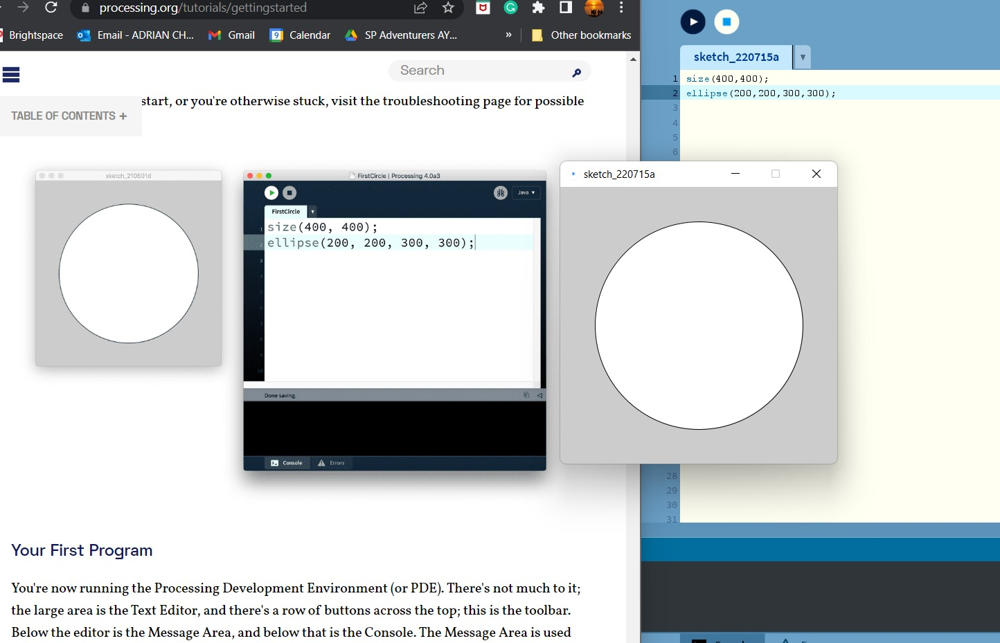
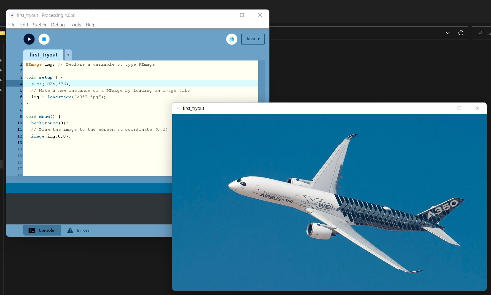
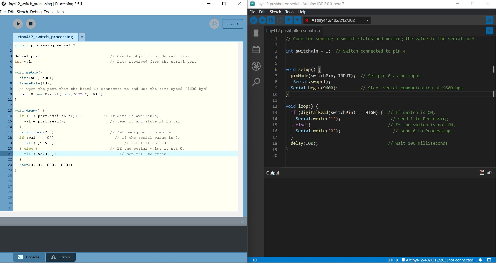

In this topic I will be going through interface and apllications programming. Interface and applications programming is in our everyday lives. Whether using a laptop or turning on everyday appliances like the air conditioning it is embedded with systems that are programmed to be interactive with the user and carries out functions that the user intends. In this topic I will be using my PCB that I have designed last term to carry out interface functions.
First off, I was taught how to use Processing. Processing is a coding language that is able to progamme creative visuals and interactive media. Upon dowloading the Processing application from its website, I tried out my first interface code. It was really easy to get my way around as there were tutorials readily available for me to try out!
In my first code I tried out coding a cicle in a window and below is how it looked like! The code written is also in the picture!
Following that I imported a jpg image and displayed it in a window coded by processing. Below is how the image turned out!
After trying out these simple tutorials, I wanted to take it one step further, thus I decided to code my tiny412 board to interact with my laptop via the serial ports. From the electronics tutorial I managed to write out some codes that would help with that interaction! Below is the picture of the corresponding codes, on the left it is the processing code that would interface my laptop. On the right it would be the arduino code that would be programming my tiny412. This interaction is possible thru serial communication of my PCB and the laptop!
The code above will show a window on my laptop that will turn green if i press the pushbutton on my tiny412 PCB. Otherwise, it will show a red screen. The video below shows the function!
Click here to return back to documentations!!